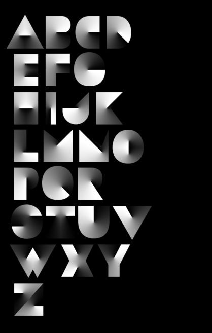

Centered Text
It's boring
use saaringly
Centered text is overused. It’s the typographic equivalent of vanilla ice cream—safe but boring. It’s rare to see text centered in a book, newspaper, or magazine, except for the occasional headline or title. Asymmetry is nothing to fear.
Yet it is feared. So for all the fans of centered text, a poem:
An Ode to Centered Text
Centered text is acceptable when used for short phrases or titles,
like the name on your business cards or letterhead.
Or in documents, you can center major section headings
like “Introduction”, “Argument”, and “Conclusion”.
(It may be conventional in your jurisdiction.
to center certain text in court filings.)
If you enjoy centering text, then
you should learn to use the
hard line break
so your lines start
in sensible
places.
OK?
Whole text blocks, including sentence-length headings in court filings, should not be centered. Centering makes text blocks difficult to read because both edges of the text block are uneven. Centered text blocks are also difficult to align with other page elements. See headings for better options.
